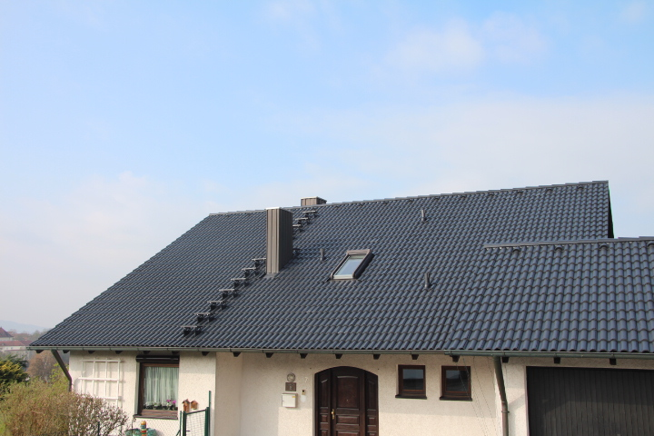

Dachbeschichtung
Nach 20, 30 oder 40 Jahren sind Betondachsteine oft verwittert, vermoost und unansehnlich. Die Substanz ist aber meist noch gut. Dann reicht es, das Dach gründlich zu reinigen und mit einer atmungsaktiven Schutzbeschichtung zu versehen.
- Reinigen: Moos, Algen und Flechten werden entfernt.
- Prüfen: Beschädigte Dachsteine werden ausgetauscht.
- Beschichten: Farb-Schutzschicht in der Farbe Ihrer Wahl.
- Dachsteine bleiben erhalten, keine teure Neueindeckung
- Für Betondachsteine und Tonziegel
- Wasser läuft ab, das Dach trocknet schneller, Moos wächst weniger